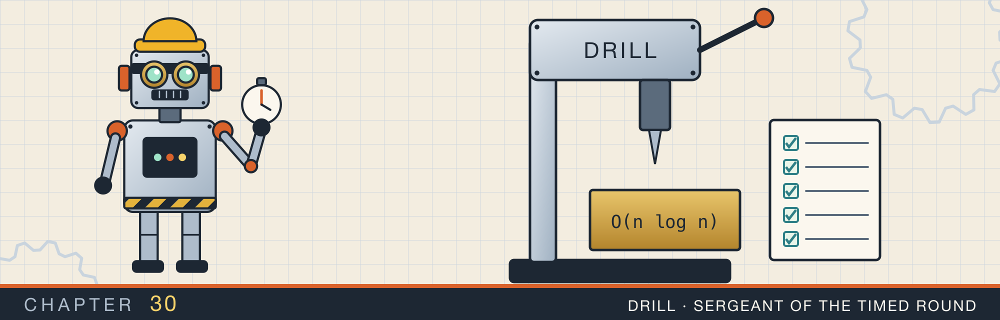
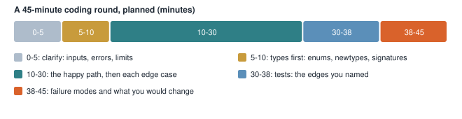

Drills against the clock
This chapter covers
- Ten compact systems implementations sized for a 45-minute technical interview
- Cross-references mapping each compact drill to its full production-grade counterpart
- Deliberate engineering trade-offs omitted from the short forms, including a subtle lazy-iterator serialization defect
- Time-allocation discipline for a 45-minute live coding round and a structured rehearsal protocol
Production-grade systems primitives prioritize safety invariants, cache-line contention avoidance, and exhaustive failure handling; timed technical interviews impose a distinct constraint set: a blank buffer, a concise specification, and roughly forty minutes to deliver a verified implementation. The module drills.rs provides ten self-contained, interview-sized counterparts to the book’s core concurrency, networking, and data-structure primitives, each paired with a unit test exercising primary behavior.
This reference guide indexes each drill against its full implementation, audits every deliberate simplification and behavioral divergence, and defines a repeatable rehearsal protocol for timed execution.
30.1 The drills
Listing 30.1 Ten answers sized for a live round. src/problems/drills.rs
//! Compact implementations of the common primitives.
//!
//! Each item is a short standalone implementation. The modules next to this one
//! are the full versions with long explanations and complete test suites.
use std::{
cell::UnsafeCell,
collections::{VecDeque, hash_map::DefaultHasher},
hash::Hasher,
ops::{Deref, DerefMut},
sync::{
Arc,
Condvar,
Mutex,
atomic::{AtomicBool, Ordering},
mpsc,
},
thread::{self, JoinHandle},
time::Duration,
};
// --- Thread-safe counter (Arc + Mutex) ---
pub fn count_parallel(threads: usize, per_thread: usize) -> usize {
let counter = Arc::new(Mutex::new(0usize));
let handles: Vec<_> = (0..threads)
.map(|_| {
let counter = Arc::clone(&counter);
thread::spawn(move || {
for _ in 0..per_thread {
*counter.lock().expect("poisoned") += 1;
}
})
})
.collect();
for handle in handles {
handle.join().expect("worker panicked");
}
*counter.lock().expect("poisoned")
}
// --- Scoped threads (borrow instead of Arc) ---
pub fn parallel_sum(values: &[i32]) -> i64 {
let chunk_size = values.len().div_ceil(4).max(1);
thread::scope(|scope| {
values
.chunks(chunk_size)
.map(|chunk| {
scope.spawn(move || {
chunk
.iter()
.map(|value| i64::from(*value))
.sum::<i64>()
})
})
.map(|handle| handle.join().expect("worker panicked"))
.sum()
})
}
// --- Spin lock from an atomic ---
pub struct SpinLock<T> {
locked: AtomicBool,
value: UnsafeCell<T>,
}
unsafe impl<T: Send> Sync for SpinLock<T> {}
impl<T> SpinLock<T> {
pub const fn new(value: T) -> Self {
Self {
locked: AtomicBool::new(false),
value: UnsafeCell::new(value),
}
}
pub fn lock(&self) -> SpinGuard<'_, T> {
while self
.locked
.swap(true, Ordering::Acquire)
{
std::hint::spin_loop();
}
SpinGuard { lock: self }
}
}
pub struct SpinGuard<'a, T> {
lock: &'a SpinLock<T>,
}
impl<T> Drop for SpinGuard<'_, T> {
fn drop(&mut self) {
self.lock
.locked
.store(false, Ordering::Release);
}
}
impl<T> Deref for SpinGuard<'_, T> {
type Target = T;
fn deref(&self) -> &T {
unsafe { &*self.lock.value.get() }
}
}
impl<T> DerefMut for SpinGuard<'_, T> {
fn deref_mut(&mut self) -> &mut T {
unsafe { &mut *self.lock.value.get() }
}
}
// --- Semaphore (acquire blocks) ---
pub struct Semaphore {
permits: Mutex<usize>,
released: Condvar,
}
impl Semaphore {
pub fn new(permits: usize) -> Self {
Self {
permits: Mutex::new(permits),
released: Condvar::new(),
}
}
pub fn acquire(&self) {
let mut permits = self.permits.lock().expect("poisoned");
while *permits == 0 {
permits = self
.released
.wait(permits)
.expect("poisoned");
}
*permits -= 1;
}
pub fn try_acquire(&self) -> bool {
let mut permits = self.permits.lock().expect("poisoned");
if *permits == 0 {
false
} else {
*permits -= 1;
true
}
}
pub fn release(&self) {
*self.permits.lock().expect("poisoned") += 1;
self.released.notify_one();
}
}
// --- Bounded blocking queue (backpressure + close) ---
pub struct BlockingQueue<T> {
inner: Mutex<Inner<T>>,
not_empty: Condvar,
not_full: Condvar,
}
struct Inner<T> {
items: VecDeque<T>,
capacity: usize,
closed: bool,
}
impl<T> BlockingQueue<T> {
pub fn new(capacity: usize) -> Self {
Self {
inner: Mutex::new(Inner {
items: VecDeque::new(),
capacity,
closed: false,
}),
not_empty: Condvar::new(),
not_full: Condvar::new(),
}
}
pub fn push(&self, item: T) -> Result<(), T> {
let mut inner = self.inner.lock().expect("poisoned");
loop {
if inner.closed {
return Err(item);
}
if inner.items.len() < inner.capacity {
inner.items.push_back(item);
self.not_empty.notify_one();
return Ok(());
}
inner = self
.not_full
.wait(inner)
.expect("poisoned");
}
}
pub fn pop(&self) -> Option<T> {
let mut inner = self.inner.lock().expect("poisoned");
loop {
if let Some(item) = inner.items.pop_front() {
self.not_full.notify_one();
return Some(item);
}
if inner.closed {
return None;
}
inner = self
.not_empty
.wait(inner)
.expect("poisoned");
}
}
pub fn close(&self) {
let mut inner = self.inner.lock().expect("poisoned");
inner.closed = true;
drop(inner);
self.not_empty.notify_all();
self.not_full.notify_all();
}
}
// --- Thread pool (fixed workers + channel) ---
pub struct ThreadPool {
sender: Option<mpsc::Sender<Box<dyn FnOnce() + Send + 'static>>>,
workers: Vec<JoinHandle<()>>,
}
impl ThreadPool {
pub fn new(size: usize) -> Self {
let (sender, receiver) = mpsc::channel::<Box<dyn FnOnce() + Send + 'static>>();
let receiver = Arc::new(Mutex::new(receiver));
let workers = (0..size)
.map(|_| {
let receiver = Arc::clone(&receiver);
thread::spawn(move || {
loop {
let Ok(job) = receiver
.lock()
.expect("poisoned")
.recv()
else {
return;
};
job();
}
})
})
.collect();
Self {
sender: Some(sender),
workers,
}
}
pub fn execute(&self, job: impl FnOnce() + Send + 'static) {
self.sender
.as_ref()
.expect("pool dropped")
.send(Box::new(job))
.expect("worker gone");
}
}
impl Drop for ThreadPool {
fn drop(&mut self) {
drop(self.sender.take());
for worker in self.workers.drain(..) {
let _ = worker.join();
}
}
}
// --- Retry with exponential backoff ---
pub fn retry<T, E>(
max_attempts: u32,
mut operation: impl FnMut() -> Result<T, E>,
retryable: impl Fn(&E) -> bool,
) -> Result<T, E> {
let mut delay = Duration::from_millis(25);
let mut attempt = 0;
loop {
match operation() {
Ok(value) => return Ok(value),
Err(error) => {
attempt += 1;
if attempt >= max_attempts || !retryable(&error) {
return Err(error);
}
thread::sleep(delay);
delay = (delay * 2).min(Duration::from_secs(1));
}
}
}
}
// --- Consistent hashing ring ---
#[derive(Default)]
pub struct HashRing {
points: Vec<(u64, String)>,
}
impl HashRing {
pub fn new() -> Self {
Self::default()
}
pub fn add(&mut self, node: &str, replicas: usize) {
for replica in 0..replicas {
self.points
.push((hash(node, replica), node.to_string()));
}
self.points
.sort_unstable_by_key(|(point, _)| *point);
}
pub fn get(&self, key: &str) -> Option<&str> {
if self.points.is_empty() {
return None;
}
let hash = hash(key, 0);
let index = self
.points
.partition_point(|(point, _)| *point <= hash)
% self.points.len();
Some(self.points[index].1.as_str())
}
}
fn hash(input: &str, replica: usize) -> u64 {
let mut hasher = DefaultHasher::new();
hasher.write(input.as_bytes());
hasher.write_usize(replica);
hasher.finish()
}
// --- HTTP request head ---
pub struct RequestHead {
pub method: String,
pub target: String,
pub headers: Vec<(String, String)>,
}
pub fn parse_request_head(input: &str) -> Option<RequestHead> {
let mut lines = input.split("\r\n");
let mut request_line = lines.next()?.split(' ');
let method = request_line.next()?.to_string();
let target = request_line.next()?.to_string();
if request_line.next()? != "HTTP/1.1" {
return None;
}
let mut headers = Vec::new();
for line in lines {
if line.is_empty() {
break;
}
let (name, value) = line.split_once(':')?;
headers.push((name.trim().to_ascii_lowercase(), value.trim().to_string()));
}
Some(RequestHead {
method,
target,
headers,
})
}
// --- Newtype and enum ADT ---
pub struct Port(u16);
impl Port {
pub fn new(value: u16) -> Result<Self, &'static str> {
(1..=u16::MAX)
.contains(&value)
.then_some(Self(value))
.ok_or("port must be non-zero")
}
pub fn get(self) -> u16 {
self.0
}
}
pub enum Route {
Health,
List,
ById(String),
}
impl Route {
pub fn parse(path: &str) -> Option<Self> {
match path {
"/healthz" => Some(Self::Health),
"/v1/gpu-workloads" => Some(Self::List),
_ => path
.strip_prefix("/v1/gpu-workloads/")
.map(|id| Self::ById(id.to_string())),
}
}
}
#[cfg(test)]
mod tests {
use std::sync::atomic::AtomicUsize;
use super::*;
#[test]
fn counter_scoped_sum_and_spin_lock() {
assert_eq!(count_parallel(4, 100), 400);
assert_eq!(parallel_sum(&[1, 2, 3, 4]), 10);
let lock = Arc::new(SpinLock::new(0usize));
let handles: Vec<_> = (0..4)
.map(|_| {
let lock = Arc::clone(&lock);
thread::spawn(move || {
for _ in 0..100 {
*lock.lock() += 1;
}
})
})
.collect();
for handle in handles {
handle.join().expect("worker panicked");
}
assert_eq!(*lock.lock(), 400);
}
#[test]
fn semaphore_queue_and_pool() {
let semaphore = Semaphore::new(1);
assert!(semaphore.try_acquire());
assert!(!semaphore.try_acquire());
semaphore.release();
assert!(semaphore.try_acquire());
let queue = BlockingQueue::new(1);
assert_eq!(queue.push(1), Ok(()));
queue.close();
assert_eq!(queue.pop(), Some(1));
assert_eq!(queue.pop(), None);
assert_eq!(queue.push(2), Err(2));
let pool = ThreadPool::new(3);
let counter = Arc::new(AtomicUsize::new(0));
for _ in 0..100 {
let counter = Arc::clone(&counter);
pool.execute(move || {
counter.fetch_add(1, Ordering::SeqCst);
});
}
drop(pool);
assert_eq!(counter.load(Ordering::SeqCst), 100);
}
#[test]
fn retry_ring_http_and_adt() {
let mut attempts = 0;
let ok = retry(
3,
|| {
attempts += 1;
if attempts < 3 {
Err("transient")
} else {
Ok(7)
}
},
|_| true,
);
assert_eq!(ok, Ok(7));
let mut attempts = 0;
let bad: Result<(), &str> = retry(
3,
|| {
attempts += 1;
Err("permanent")
},
|_| false,
);
assert!(bad.is_err());
assert_eq!(attempts, 1);
let mut ring = HashRing::new();
ring.add("a", 64);
ring.add("b", 64);
let before = ring.get("job-1").map(str::to_string);
ring.add("c", 64);
let after = ring.get("job-1").map(str::to_string);
assert!(after == before || after.as_deref() == Some("c"));
let head = parse_request_head("GET /v1/gpu-workloads HTTP/1.1\r\nHost: api\r\n\r\n")
.expect("valid");
assert_eq!(
(head.method.as_str(), head.target.as_str()),
("GET", "/v1/gpu-workloads")
);
assert_eq!(head.headers[0], ("host".to_string(), "api".to_string()));
assert!(parse_request_head("GET / HTTP/2\r\n\r\n").is_none());
assert!(Port::new(8080).is_ok());
assert!(Port::new(0).is_err());
assert!(matches!(Route::parse("/healthz"), Some(Route::Health)));
assert!(matches!(
Route::parse("/v1/gpu-workloads/wl-1"),
Some(Route::ById(id)) if id == "wl-1"
));
}
}The module header defines its architectural boundary: neighboring modules hold full reference implementations, while drills.rs isolates minimal versions achievable under time pressure. The table below maps each drill to its corresponding reference chapter and listing:
| Drill | Lines | Full version |
|---|---|---|
count_parallel: Arc<Mutex<usize>> counter | 18 | chapter 8 (total_with_arc_mutex, listing 8.7), chapter 16 |
parallel_sum: scoped threads | 12 | chapter 16, threads::parallel_sum, listing 16.5 |
SpinLock and SpinGuard | 45 | chapter 16, listing 16.12 |
Semaphore | 36 | chapter 16, listing 16.15 |
BlockingQueue with close | 62 | chapter 17, listing 17.24 |
ThreadPool with Drop | 45 | chapter 18, listing 18.7 |
retry with backoff | 21 | chapter 19, listing 19.9 |
HashRing | 33 | chapter 14, listing 14.9 |
parse_request_head | 29 | chapter 21, listing 21.1 |
Port newtype and Route enum | 32 | chapter 7 (the GpuCount newtype, listing 7.2); chapter 21, route |
30.2 Queens on a bitboard
The problem. We place queens on an 8 × 8 chessboard so that no queen attacks another. We also move a queen to a new square along a legal queen move. A queen attacks every square in its row, in its column, and on its two diagonals. Placing eight queens under this rule is the eight queens puzzle, which the chess composer Max Bezzel published in 1848.
The baseline approach. We could store the board as an 8 × 8 array of booleans. To test whether a square is safe, we would walk along its row, its column and both of its diagonals. That walk visits up to 27 squares for every test.
The bitboard approach. Instead of storing squares, we store lines. A queen at row x and column y sits on exactly four lines: one row, one column, one diagonal, and one anti-diagonal. We keep one bit for every line on the board and set that bit when a queen occupies the line. A square is safe exactly when none of its four lines has its bit set. A board that stores its state in the bits of integers is called a bitboard.
Each kind of line needs a number, so that the line can be mapped to a bit:
- The board has 8 rows and 8 columns. Row
xis bitxofrows, and columnyis bityofcols, so each fits in au8. - All squares on one diagonal have the same difference
x - y, which ranges from -7 to 7. Adding 7 gives the bit numberx + 7 - y, from 0 to 14, sodiagsneeds au16. - All squares on one anti-diagonal have the same sum
x + y, which ranges from 0 to 14, soanti_diagsis also au16.
For example, a queen at (1, 2) sets bit 1 of rows and bit 2 of cols. It also sets bit 1 + 7 - 2 = 6 of diags and bit 1 + 2 = 3 of anti_diags. Testing a square then takes four AND operations, however many queens the board holds, and the whole board fits in 6 bytes.
Moving a queen. Queen::can_move accepts a move along a row (dx == 0), along a column (dy == 0), or along a diagonal (dx == dy). Every legal destination therefore lies on one of the queen’s own lines. Those lines still have their bits set while the queen stands on its old square. If move_piece called place(to) directly, place would find the queen’s own bits and reject every legal move.
move_piece therefore lifts the queen off the board first. It calls remove(from), which clears the queen’s four bits, and then calls place(to). If another queen attacks the destination, place returns an error, and the queen must go back to its old square. move_piece handles that case with a saved copy of the board. It saves the copy with let before = *self; before it removes the queen, and it restores the copy when place fails. Chess derives Copy, and the copy is only 6 bytes.
Listing 30.2 Non-attacking queens on a bitboard. src/bin/chess.rs
#[derive(Debug)]
enum Error {
InvalidMove(&'static str),
OutOfBounds,
Occupied,
}
type Res<T = ()> = Result<T, Error>;
#[derive(Clone, Copy, Debug)]
struct Cell {
x: usize,
y: usize,
}
trait Piece {
fn can_move(&self, from: Cell, to: Cell) -> bool;
}
struct Queen;
impl Piece for Queen {
fn can_move(&self, from: Cell, to: Cell) -> bool {
let dx = from.x.abs_diff(to.x);
let dy = from.y.abs_diff(to.y);
dx == 0 || dy == 0 || dx == dy
}
}
#[derive(Clone, Copy)]
struct Chess {
rows: u8,
cols: u8,
diags: u16,
anti_diags: u16,
}
impl Chess {
fn new() -> Self {
Self {
rows: 0,
cols: 0,
diags: 0,
anti_diags: 0,
}
}
fn place(&mut self, cell: Cell) -> Res {
if cell.x >= 8 || cell.y >= 8 {
return Err(Error::OutOfBounds);
}
let r = 1u8 << cell.x;
let c = 1u8 << cell.y;
let d = 1u16 << (cell.x + 7 - cell.y);
let ad = 1u16 << (cell.x + cell.y);
if (self.rows & r) != 0
|| (self.cols & c) != 0
|| (self.diags & d) != 0
|| (self.anti_diags & ad) != 0
{
return Err(Error::Occupied);
}
self.rows |= r;
self.cols |= c;
self.diags |= d;
self.anti_diags |= ad;
Ok(())
}
fn remove(&mut self, cell: Cell) {
self.rows &= !(1u8 << cell.x);
self.cols &= !(1u8 << cell.y);
self.diags &= !(1u16 << (cell.x + 7 - cell.y));
self.anti_diags &= !(1u16 << (cell.x + cell.y));
}
fn move_piece(&mut self, piece: &dyn Piece, from: Cell, to: Cell) -> Res {
if !piece.can_move(from, to) {
return Err(Error::InvalidMove("illegal trajectory"));
}
// Lift the queen first, or its own lines block every move.
let before = *self;
self.remove(from);
let placed = self.place(to);
if placed.is_err() {
*self = before;
}
placed
}
}
fn main() -> Res {
let mut board = Chess::new();
let queen = Queen;
board.place(Cell { x: 0, y: 0 })?;
board.move_piece(&queen, Cell { x: 0, y: 0 }, Cell { x: 2, y: 2 })?;
println!("moved the queen from (0, 0) to (2, 2)");
println!("place (5, 5): {:?}", board.place(Cell { x: 5, y: 5 }));
Ok(())
}$ cargo run --bin chess
moved the queen from (0, 0) to (2, 2)
place (5, 5): Err(Occupied)
Key details of the implementation:
placefirst returnsErr(Error::OutOfBounds)for a square outside the board, before it builds any bit. A shift such as1u8 << 9would overflow theu8.placebuilds one mask for each line, such as1u8 << cell.xfor the row. A bitwise AND of a mask with its field is nonzero when that line is taken, and a bitwise OR sets the bit.removeclears each bit with&= !mask. The!operator flips every bit of the mask, so the AND keeps every other bit unchanged.abs_diffreturns the distance between twousizevalues without underflow, which is whycan_movecan comparedxanddydirectly.
The program places a queen at (0, 0) and moves it along the diagonal to (2, 2). It then tries to place a second queen at (5, 5). Both squares lie on diagonal 7, because 2 + 7 - 2 = 7 and 5 + 7 - 5 = 7. The square (5, 5) is therefore attacked, and place returns Err(Occupied).
30.3 What the short forms leave out
Omitting secondary features is acceptable under interview time constraints only when the author can articulate every omitted invariant and its production consequence during follow-up questioning.
Test-and-set versus test-and-test-and-set in SpinLock. The drill spins via while self.locked.swap(true, Acquire) { spin_loop() }, executing an atomic read-modify-write on every iteration. Under multicore contention, every spinning core repeatedly invalidates the lock’s cache line across the interconnect (cache-line bouncing). The reference implementation in Chapter 16 uses compare_exchange_weak guarded by an inner Relaxed load loop, allowing waiting cores to spin on a shared read-only cache line until release. Both preserve mutual exclusion, but only the reference scales under contention. The drill also omits explicit // SAFETY: invariant documentation required in production reviews.
Permit leakage in Semaphore. Exposing bare acquire and release methods leaks a permit whenever a caller returns early or panics between calls. The reference design in Section 16.5 returns an RAII SemaphoreGuard whose Drop implementation releases the permit deterministically.
Temporary drop order in ThreadPool. Writing let Ok(job) = receiver.lock().expect(..).recv() else { return; }; binds the job in a let statement, dropping the temporary MutexGuard at the semicolon prior to executing job(). Timing confirms true parallelism: four 200 ms tasks across four workers complete in 205 ms. Writing the identical receive inside while let would extend the MutexGuard lifetime across the loop body and serialize all worker threads (Chapter 18, Figure 18.2).
Modulo wraparound and allocation in HashRing. The drill maps past-the-end binary-search indices back to slot 0 via partition_point(..) % self.points.len() rather than an explicit branch, hashes (input, replica) directly without intermediate formatting, and stores an owned String per virtual node instead of sharing a single Arc<str>.
Minimal validation in parse_request_head. The drill enforces HTTP/1.1, splits headers on the first colon, and normalizes header names to lowercase, omitting header-size bounds, mandatory Host verification, and body framing. That scope matches a ten-minute parsing prompt; full HTTP server hardening requires the checks developed in Chapter 21.
Concise domain validation in Port and Route. Port::new encodes its range invariant in a single combinator pipeline: (1..=u16::MAX).contains(&value).then_some(Self(value)).ok_or(..). Route::parse matches static paths directly and extracts parameterized IDs via strip_prefix, rejecting all unrecognized paths with None.
30.4 The drill that is slower than it looks
Unlike the intentional simplifications above, the drill version of parallel_sum alters asymptotic concurrency relative to the Chapter 16 reference:
// drills.rs
values
.chunks(chunk_size)
.map(|chunk| scope.spawn(move || ...))
.map(|handle| handle.join().expect("worker panicked"))
.sum()
// threads.rs
let handles: Vec<_> = values.chunks(chunk_size).map(|chunk| scope.spawn(...)).collect();
handles.into_iter().map(|handle| handle.join().expect("worker panicked")).sum()Rust iterators are lazy. In drills.rs, sum pulls one element completely through both map adapters before requesting the next chunk. Consequently, the first worker thread is spawned and immediately joined before the second worker thread is even created, executing all four chunks strictly sequentially. The reference implementation forces eager spawning by collecting all JoinHandles into a Vec before joining any of them.
Because sequential execution produces the identical arithmetic sum, a value-only unit test passes without flagging the bug. Timing four workers that each sleep for 200 ms exposes the serialization immediately:
lazy spawn/join chain, four 200 ms workers: 809.402756ms (sum 4)
collect first, then join: 203.482125ms (sum 4)
Inserting a single .collect::<Vec<_>>() between the two map stages restores full parallelism. As established in the thread-pool analysis of Chapter 18, verifying concurrency requires either a synchronization barrier (such as thread_pool_v2’s jobs_run_at_the_same_time) or a wall-clock timing assertion rather than output-value equality alone.
30.5 Running a round
A 45-minute technical round follows five predictable phases. Allocating time deliberately protects the final seven minutes, where systems design maturity is evaluated, from last-minute debugging (Figure 30.1).

- Clarify (0 to 5 min). Lock down input contracts, invalid-input semantics, and operational bounds (capacity, concurrency, latency). Every constraint translates directly into a type invariant or guard clause.
- Types first (5 to 10 min). Specify enums, newtypes, and public function signatures before writing implementation bodies. Selecting
Result<T, ParseError>early prevents structural rewrites mid-round. - Happy path, then edge cases (10 to 30 min). Compile and pass one end-to-end path first, then layer in boundary checks, concurrency shutdown paths, and error variants.
- Tests (30 to 38 min). Write targeted unit tests covering empty inputs, capacity bounds, concurrent contention, and error returns rather than only the prompt’s nominal example.
- Failure modes (38 to 45 min). Articulate scaling bottlenecks, kernel limits, and production hardening steps, drawing directly from the book’s reference implementations.
30.6 Practicing with this repository
The repository supports a closed-loop rehearsal workflow for building timed fluency: implement a minimal correct structure within 30 to 45 minutes, then audit its failure modes and tests against the reference solution.
- Select one drill and review its reference chapter once.
- Close the chapter and reference source, then implement the primitive from a blank file in a scratch binary under
src/bin/. - Execute
cargo teston the implementation alongside the corresponding reference suites (cargo test thread_pool,cargo test bounded_queue,cargo test --bin http_server). - Diff the implementation against the reference module, cataloging every omission as either an intentional scope reduction or a correctness gap.
- Verbalize the production failure modes and concurrency proofs aloud as if addressing a design review.
The “Questions that come up” sections at the end of each chapter supply targeted follow-up prompts for step 5. The iterative progressions preserved across the repository (eleven merge variants, nine pools, and six ring buffers) illustrate how minimal prototypes evolve into hardened systems components.
30.7 Questions that come up
“A parallel sum returns the exact expected total. How can parallelism be verified?”
Inspect thread lifecycle ordering to verify that all worker threads are spawned before any handle is joined; a lazy iterator chaining spawn and join executes serially. Confirm concurrency empirically with a Barrier test or a wall-clock timing assertion.
“What changes are required to harden this spin lock for production?”
Guard the atomic exchange with an inner Relaxed load spin loop to avoid cache-line bouncing, add backoff or thread yielding under sustained contention, document explicit // SAFETY: invariants on unsafe impl Sync, and prefer std::sync::Mutex unless profiling proves a spin lock is necessary.
“A caller panics while holding a semaphore permit. What happens to the permit?”
With bare acquire/release methods, the permit leaks permanently and reduces effective concurrency. Returning an RAII SemaphoreGuard whose Drop releases the permit guarantees leak-free cleanup across panics and early returns.
“What criterion governs what to omit in a timed drill?”
Match omissions strictly to the interview prompt’s stated scope, while explicitly naming every omitted production invariant (such as // SAFETY: proofs, RAII guards, cache-line optimization, or bounds enforcement) and noting where an omission alters asymptotic or concurrency behavior.